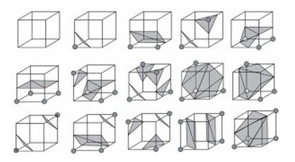
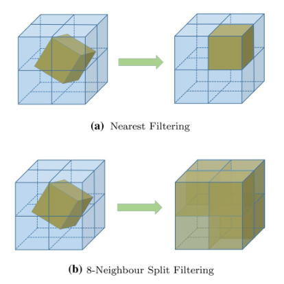
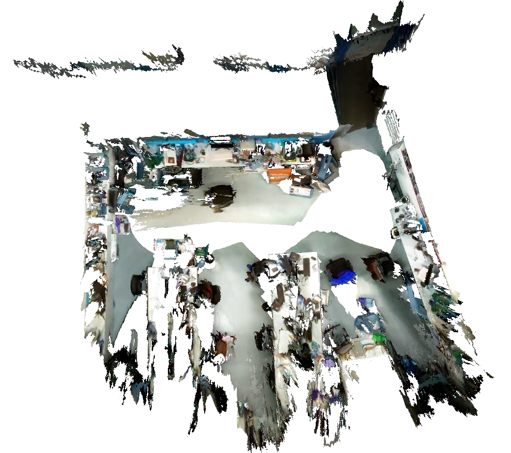
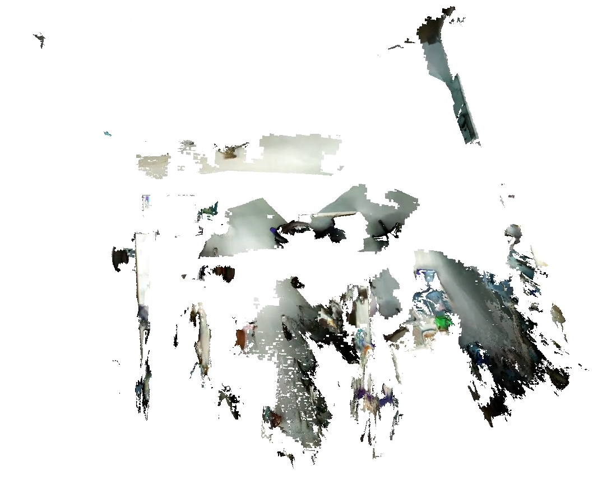

Generate the Model
From tracking and optimization, now we have frames with accurate poses. How to generate a dense model?
TSDF
TSDF is an implicit representation of a 3D scene. The world is divided into a voxel, and each voxel stores the distance to the nearest surface. This distance is signed, and the position interpolated to 0 is the real surface If the distance is very far, it is actually useless and can be truncated directly, which is TSDF (Truncated Signed Distance Field).
In FCLib, such voxel is defined as:
class TSDFVoxel
{
public:
//distance
float sdf = 999;
//weight
float weight = 0;
//color
geometry::Point3 color = geometry::Point3(-1,-1,-1);
};
FCLib use voxel-hashing to save the voxels that are close to surface for memory and time efficiency. \(8\times 8 \times 8\) voxels are treated as a cube, and these Cube is stored through a spatial hash list.
class VoxelCube
{
public:
std::vector<TSDFVoxel> voxels;
Eigen::Vector3i cube_id;
};
Through the ID of the Cube, you can easily find the location of the Cube, and then find the internal voxel. The hash map of the Cube is encapsulated in the class CubeHandler.
From Frame to TSDF
How to get the sdf value of a voxel through a frame? First, we calculate the position of the world coordinate system of the Voxel center through the position of voxel and the cube where it is located, and then project this position into the frame to find the corresponding depth. This depth is distance the point of the surface to the camera plane. Then SDF is defined as: $$ sdf = z(T^{-1} * p_v) - d(\omega(T^{-1} * p_v)) $$
\(z(\cdot)\) get the third value of a 3D vector, \(d(\cdot)\) get the depth of an uv coordinate, \(\omega\) is the reprojection function.
One problem is that the three-dimensional world is infinite, so we cannot do this operation for every voxel. Here we introduce frustum, which defines an effective imaging area for the camera. Only points in the frustum are considered. The frustum is defined in Frustum.h in FCLib.
For a certain frame, we only process cubes in the frustum. Even so, the number of voxels is still large. So we can sample and filter based on 8-corner of a cube. If the SDF value signs of the 8 vertices are the same, we think that there is no surface in this Cube, please refer to FlashFusion for details.
A voxel's sdf may get different results for multiple frames, so we use weighted addition according to weight to get the final value.
The integration of a frame is implemented by the member function of CubeHandler:
void CubeHandler::IntegrateImage(const cv::Mat &depth,
const cv::Mat &rgb, const geometry::TransformationMatrix & pose);
void CubeHandler::IntegrateImage(const geometry::RGBDFrame &rgbd,
const geometry::TransformationMatrix & pose);
From TSDF to Triangle Mesh
We can further extract the triangular mesh from TSDF. The most famous algorithm is Marching Cubes. In Marching Cubes, the extraction of surface is done through cubes(not the cube we mentioned in CubeHandler). A cube has 8 vertices and 8 sdf values respectively. And the sdf value of each vertex may be greater than 0 or less than 0, so there are \(8 \times 8 \times 8\) possible situations. However, there are only 15 basic cases listed as following:

256 cases have been enumerated to form a mapping table to store the edges where the triangle vertices is interpolated, so given any cube like this, the triangle can be extracted according to the mapping table. In TSDF, 8 Voxel can be regarded as 8 vertices of a cube, and TSDF to Mesh is performed in this way.
Mesh extraction is also implemented by the member function of CubeHandler:
void CubeHandler::ExtractTriangleMesh(geometry::TriangleMesh &mesh);
Transformation of TSDF
Compared with point cloud and triangular mesh, the rotation and translation of TSDF is slightly different. The world are divided into voxels, and after the rotation and translation, the transformed voxel center coordinates become real numbers and need to be remapped to the voxels in the world coordinate system.

If the transformed voxel is only mapped to the nearest voxel, it will cause inaccurate results, and may produce holes and missing. An 8-neighbor filter can provide accurate results.
In CubeHandler, we provide these two methods of Transformation for comparison(It will be more obvious if the voxel resolution is higher):
//Map to the nearest voxel
std::shared_ptr<CubeHandler>
TransformNearest(const geometry::TransformationMatrix &trans) const;
//Map to 8 neighbor voxel, use weighted addition to get the final value
std::shared_ptr<CubeHandler>
Transform(const geometry::TransformationMatrix &trans) const;


It should be noted that the FCLib implements the most primitive Marching Cubes algorithm. The obtained Mesh is often very dense, you can use ClusteringSimplify to aggregate the points which are close to one point, and the normal vector can be calculated by ComputeNormals.